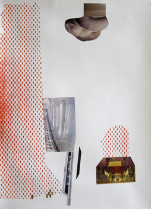

| Home | Past Exhibits | Posters For Sale | Contact | Application | Follow Us on |
|---|
New Print TopographiesZygote PressOpening July 6, 2012 7-9PMExhibit July 6 - September 3, 2012 |
|
|---|---|
Liz Maugans |
|

|
Liz MaugansLiz Maugans is the co-founder and Managing Director of Zygote Press, Inc. She received her BFA in printmaking from Kent State University and her MFA from Cranbrook Academy of Art in 1992. She teaches printmaking and drawing at Cleveland Institute of Art and Lorain County Community College. She is included in the Progressive Art Collection, BF Goodrich(Charlotte, N.C.) and The Riffe Center for Government and the Arts, (Columbus, OH) collections. She received an Ohio Arts Council Fellowship in 2000 and a 2005 Artist-in-Communities Grant from the Ohio Arts Council for her "Drawing It Out" program, that introduces creative experiences to women (reentering the community from the criminal justice system) in chemical dependency programs. In 2012, Zygote Press received the Martha Joseph Prize for Distinguished Service to the Arts from the Cleveland Arts Prize Liz is the originator of the Collective Arts Network, a Zygote inititative started in 2011 that connects Visual Arts organizations through resource sharing, marketing collaborations and the publication of a quarterly journal.
websites: |
LISA SCHONBERG At present, Lisa Schonberg teaches printmaking, and design courses as an adjunct professor at Notre Dame College in S. Euclid, Ohio and Baldwin Wallace College in Berea, Ohio. Lisa earned a BFA from Ohio University in 1976 majoring in Art Education and an MFA from Kent State University in 1984 majoring in Printmaking. In addition to teaching at Notre Dame and BW, Lisa has taught at the Cleveland Museum of Art, Cleveland Institute of Art, the Orange Art Center and Zygote Press in Cleveland. She has also taught in several artist-in-residency programs such as Metro Health Center’s Art Therapy Department, Laurel High School, Hawken Lower School and Moreland Hills Elementary School. Her teaching career spans a total of 33 years.
LISA SCHONBERG
Exhibits include:
1984 MFA Thesis, Kent State University, Kent
1983 Kent Women Artists Exhibition, KSU, Kent |
|
Jen Craun
Images: Titles: Suburban paradigm, standard waters
Media + Dimensions: Each of these prints are a combination of mono print, relief + stencil printing, with layers of ink drawing. Prices: Each are $400 |
|
|
|
|
|
|
|
Corrie SlawsonCorrie Slawson was born in Cleveland, Ohio. She received her BFA from Parsons School of Design (1997) and her MFA from Kent State University (2006). In the fall of 2011, Slawson completed a five-week residency at the Grafikwerkstatt in Dresden, Germany through the Ohio Arts Council, Zygote Press and the City of Dresden. In that same year she was awarded an Individual Artist Excellence grant from the Ohio Arts Council. Slawson has exhibited at various organizations in Cleveland including MOCA Cleveland, Zygote Press, SPACES Gallery, Cleveland Public Art and the Beck Center for the Arts. Nationally, she has exhibited at Dangenart Gallery in Nashville, TN (2007) and is included in the 2012 Rockford Art Museum’s Midwestern Biennial in Rockford, IL. |
|

The mission of Zygote is to enable artists to produce fine art prints within an atmosphere of collective exchange by providing them with affordable workspace and exhibition opportunities. Zygote is a resource dedicated to increasing awareness about contemporary printmaking by creating active communication among artist-printmakers and the broader community. |
LISA SCHONBERG |
Denise Stewart |
|
Denise Stewart graduated with a BS degree in Education from Boston University and a BFA in Printmaking from The Cleveland Institute of Art. She combines teaching with her work in print by offering classes and giving lectures as a visiting artist. She was formerly the curator and gallery manager at the Valley Art Center in Chagrin Falls and continues to organize exhibits and jury exhibitions in the Cleveland area. Stewart is a resident artist at Zygote Press in Cleveland’s Art Quarter. Her prints incorporate unconventional materials such as used tea fiber and rust. She has exhibited at the Heights Gallery, Trinity Cathedral, The Beck Center, Zygote Press, Notre Dame College, Baldwin Wallace College, and Bay Arts. |
|
| http://www.zygotepress.com/ | |